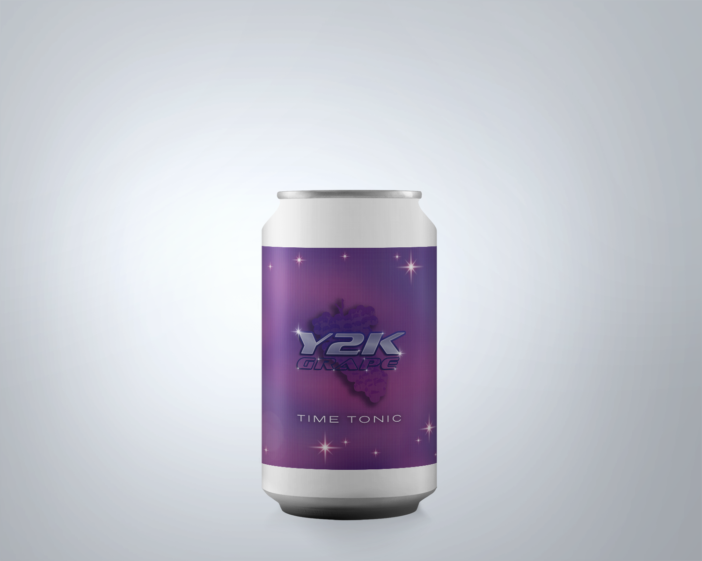
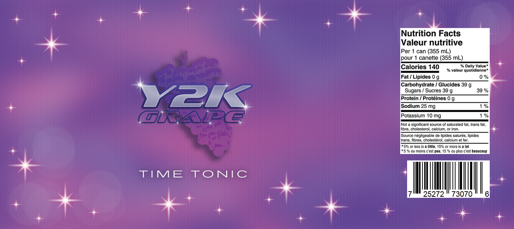

Time Tonic
 2000s - Y2K
Fear of the anticipated Y2K bug, which was expected to lead to destroy global infrastructures, had dissipated when this did not transpire with the arrival of the new millennium. As there was no longer a reason to fear potential technological catastrophes, designers freely embraced the endless possibilities of the future.
The Y2K aesthetic in graphic design favoured shiny metallics, glitter and sparkle, and bright pinks, purples, and blues. The style makes use of both 2D and 3D graphics and favoured futuristic fonts altered with an abundance of effects.